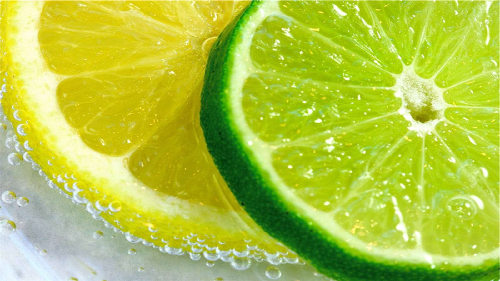

Jeruk Nipis Untuk Tubuh
Sudah sejak dulu jeruk nipis dikenal sebagai salah satu buah yang mempunyai manfaat untuk kesehatan dan kecantikan. Khasiat jeruk nipis ini tidak lepas dari berbagai kandungan yang ada dalam buah tersebut. Vitamin C yang melimpah pada jeruk nipis ternyata lebih banyak ketimbang jeruk jenis lainnya. Mungkin banyak diantara anda hanya mengetahui bahwa jeruk nipis hanya digunakan sebagai penyedap rasa pada makanan saja, padahal khasiat jeruk nipis untuk kesehatan sangatlah banyak
Salah satu manfaat jeruk nipis untuk kesehatan yakni meningkatkan kekebalan tubuh karena mengandung Vitamin C yang tinggi. Untuk mengobati berbagai penyakit pun jeruk nipis juga cukup ampuh. Beberapa penyakit yang dapat disembuhkan dengan jeruk nipis yakni seperti ambeien, amandel, batuk, radang tenggorokan, jerawat, dan masih banyak lagi.

penggunaan jeruk nipis
1. Mengobati jerawat
Caranya cukup dengan mengoleskan air perasan jeruk nipis pada jerawat kemudian diamkan selama 30 menit, setelah itu bilas wajah dengan air. Terapkan secara rutin untuk mendapatkan hasil maksimal.
2. Mengobati batuk
Langkah pertama peras 1 buah jeruk nipis dan ambil airnya. Setelah itu campurkan air perasan tersebut dengan 1 sendok madu dan sedikit garam. Aduk hingga tercampur rata kemudian konsumsi 2-3 kali sehari.
3. Mengobati radang tenggorokan
Ambil setengah buah jeruk nipis lalu peras dan ambil airnya. Campurkan air perasan tersebut dengan setengah gelas air hangat dan minumlah. Cara ini dapat anda terapkan 2-3 kali salam sehari.
4. Menghilangkan lendir di tenggorokan
Potonglah 2 jeruk nipis dan peras untuk mengambil airnya. Setelah itu campurkan air perasan jeruk nipis tersebut dengan sedikit garam. Aduk hingga rata lalu minum campuran tersebut.
5. Mengatasi haid tidak teratur
Caranya yakni dengan mencampurkan 3 sendok makan air perasan jeruk nipis, 1 sendok makan madu, dan 2 gelas air panas. Setelah itu aduk hingga rata lalu minumlah saat sudah hangat. Terapkan cara ini 3 kali sehari.
6. Mengobati anyang-anyangan
Siapkan 2 buah jeruk nipis lalu potong dan peras. Campurkan perasan jeruk nipis tersebut kedalam segelas air panas. Tambahkan sedikit gula batu dan aduk hingga tercampur rata. Setelah itu tinggal minum campuran tersebut saat masih hangat.